Gergő Pintér, PhD
gergo.pinter@uni-corvinus.hu
An event organizer company entrusts your software development company to create a choreography designer software for drone shows. They have just bought 768 drones and they want to be able to do smaller-scale drone shows on parties, birthdays, and weddings.
The software should be able to manage the position of every drone in a given space in respect of the time. Every drone is capable of switch on RGB LEDs with a given light intensity. The software should be able to manage not just the position, but the state (light) of the drone.
The software generates a trajectory for every drone that it will follow.
Your task is to design this software.
How Drone Shows
Work
by Julius Moorman
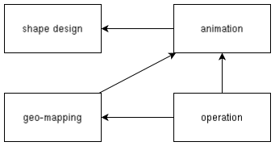
There are some dependency between the modules. For example, the shape design produces reusable shapes, so the animation depend on the a shape design.
DEMO: Nomad Sculpt – a web-based sculpting and painting application
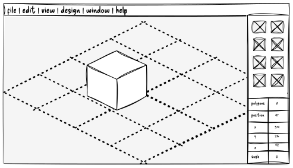
2D DEMO: Motionity – a web-based motion graphics editor
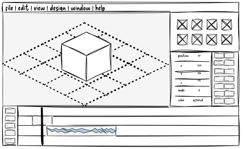
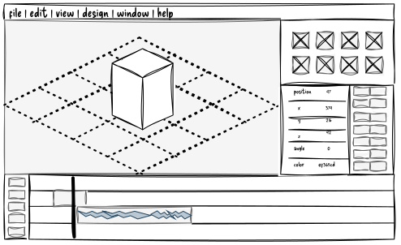
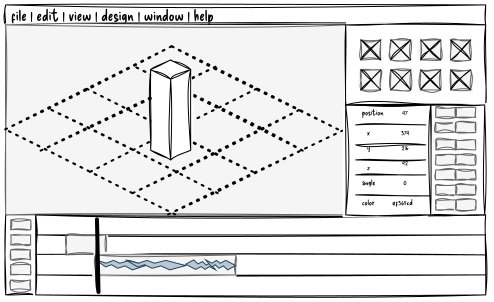
animation GUI mockup
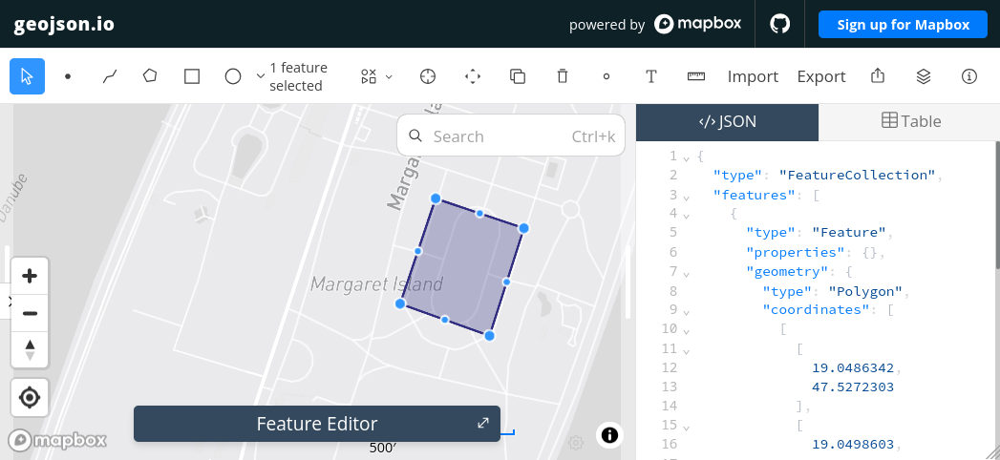
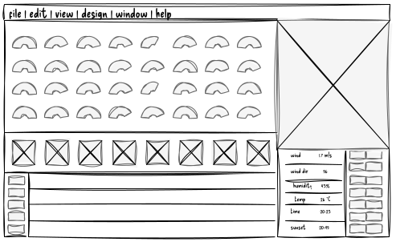
more like usage roles than actual components in terms of architecture
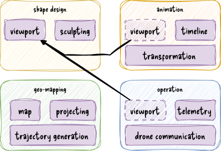
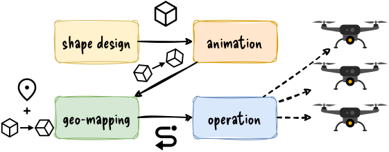
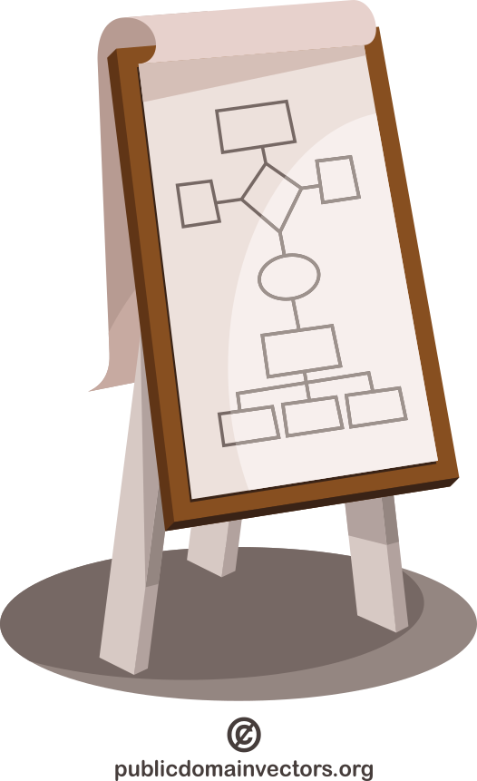
overview first, zoom and filter, then details on demand
– Ben Shneiderman
excalidraw has excelent shared work functionality
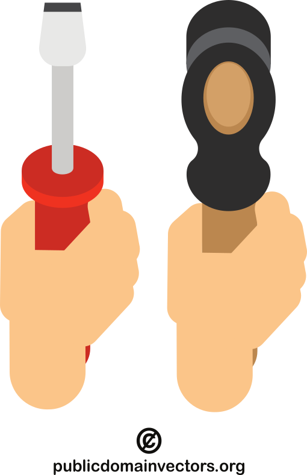
you have to submit these (zipped) by 2 December 2026 via Moodle, when you also present your work
it is enough to upload it by one person from each team
questions?
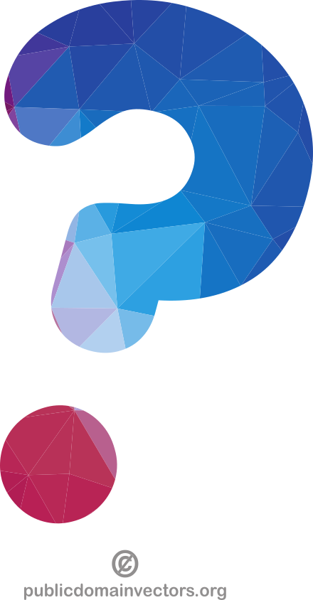